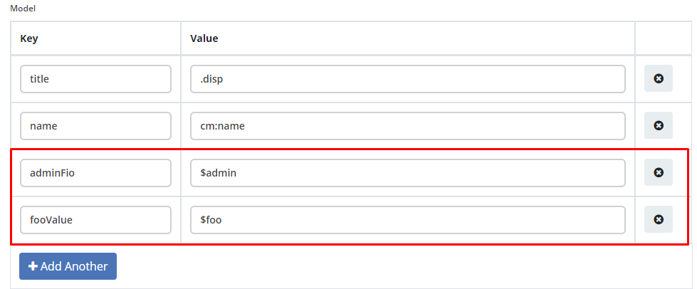
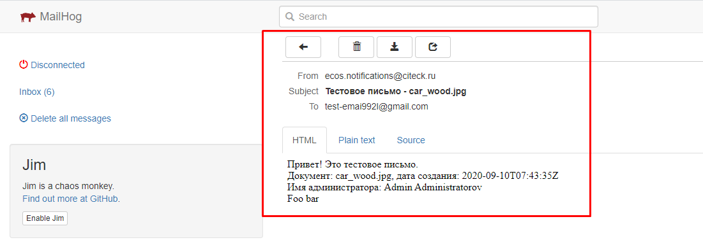

Отправка уведомлений из flowable
1. Общие сведения
Для отправки уведомлений через микросервис нотификаций была доработана стандартная активность “Mail Task”.
Примечание
При этом осталась поддержка стандартных уведомлений flowable. Если в mail task заполнено поле template, то отправка осуществляется через микросервис нотификаций по указанному шаблону, иначе - через стандартынй механизм flowable с использованием стандартных полей.
В mail task были добавлены поля:
- template
RecordRef шаблона уведомления из микросервиса нотификаций. Здесь необходимо указывать полный recordRef, например -
notifications/template@simple-test-template- html
Стандартное поле, которые не актуально при указании template, но его нужно обязательно заполнить, иначе flowable не даст сохранить шаблон процесса. Например, можно заполнить символом
_.- charset
Стандартное поле, заполнить значением
UTF-8- language
Указывается язык шаблона уведомления в формате
ru,enи т.д. Если язык не указан, то берется язык по умолчанию, который определяется свойствомnotifications.default.localeв alfresco-global.properties, изначально -en.- record
Базовый record для заполнения шаблона. Если в этом поле ничего не указано, то берется документ, по которому запущен бизнес процесс из переменной процесса
document- notificationtype
Тип уведомления. Если поле не заполнено, то тип =
EMAIL_NOTIFICATION- additionalmeta
Описание дополнительной мета информации в виде json:
ключ (string) - по ключу становится доступна информация в модели шаблона уведомления.
значение (object) - если в значении передана строка и начинается с префикса!str_, то символы после префикса записываются как строка, иначе строка считается как recordRef. Если в значение передан тип объекта, отличный от string, то он записывается явно.
Например, если в additionalmeta добавить информацию:
{
"admin": "people@admin",
"foo": "!str_bar"
}
То в модели шаблона уведомления можно будет получить доступ к значениям:
{kind=link}
При обработке шаблона - ${adminFio} выведет .disp для admin, ${foo} выведет bar
Пользователи, у которых установлен атрибут ecos:isPersonDisabled = true, отфильтровываются, и email сообщения им не отправляются. Актуально для версий: ecos-com:4.9.15, ecos-com:4.11.4 и ecos-com:4.15.0+
2. Пример отправки из mail task
Создаем шаблон уведомления
С информаций:
id = “simple-test-template“
Notification Title = Тестовое письмо - ${title}
Model =
title - .disp
created - cm:created
adminFio - $admin
fooValue - $foo
template content
Привет! Это тестовое письмо. <br>
Документ: ${title}, дата создания: ${created} <br>
Имя администратора: ${adminFio} <br>
Foo ${fooValue}
Hello! Its test email. <br>
Document: ${title}, created: ${created} <br>
Admin name: ${adminFio} <br>
Foo ${fooValue}
Создаем процесс flowable
Создадим простой flowable процесс с id simple-test-template, состоящий из отправки одного емейла.
{kind=link}
Заполним mail task следующими значениями:
template - notifications/template@simple-test-template
html - “_“.
language - оставим пустым.
record - оставим пустым.
notificationtype - оставим пустым
to - тестовый емейл, кому отправить уведомление
additionalmeta -
{
"admin": "people@admin",
"foo": "!str_bar"
}
Деплоим процесс в ecos
Загрузим какой-нибудь файл в папку “Guest Home“
Например, изображение с именем car_wood.jpg, по этому документу будет запускать процесс.
Запуск процесса
Перейдём на страницу старта workflow - https://you-ecos-url.com/share/page/start-workflow?referrer=workflows&myWorkflowsLinkBack=true и выберем созданный процесс на этапе №2 с id - simple-test-template, в поле “Элементы“ выберем загруженный файл car_wood.jpg и нажмем “Начать бизнес процесс“
Получение уведомления
{kind=link}
Так как мы не указали language, то пришло уведомление из шаблона по умолчанию en.
Вернемся в бизнес процесс flowable и в поле language поставим ru, сохраним и задеплоим новую версию, запустим бизнес процесс.
Получим уведомление из шаблона ru:
{kind=link}